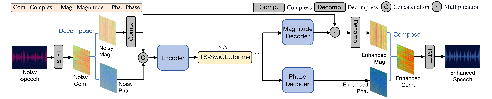
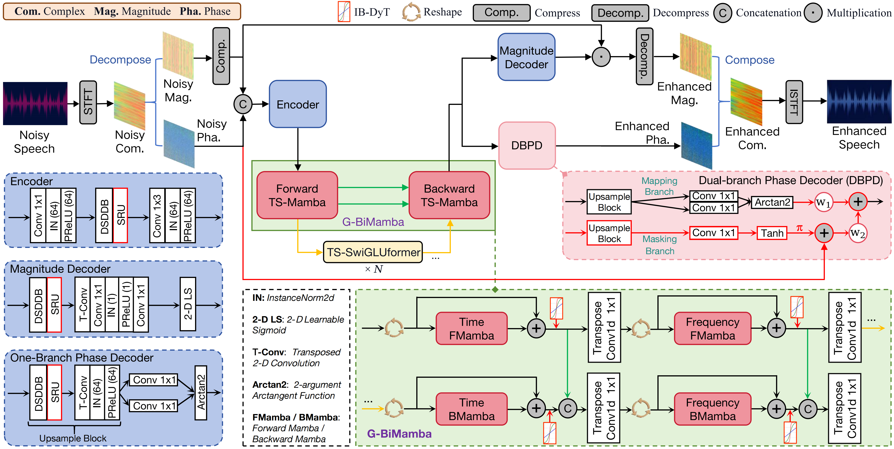
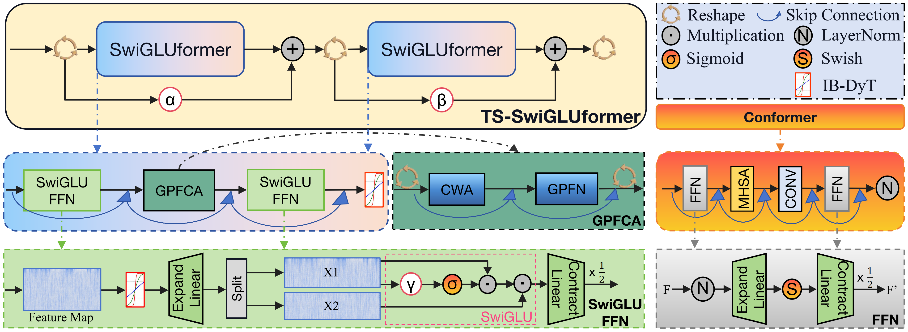

Abstract: Speech enhancement (SE) models based on multiple stacked Two-Stage (TS) blocks achieve impressive performance. However, they face a fundamental compromise between performance and efficiency within each TS block, while suffering from a limited data adaptability due to the pervasive use of layer normalization. Besides, widely adopted phase decoders tend to ignore the noisy phase condition, leading to a suboptimal noise robustness. In response, we propose two layer-normalization-free monaural SE networks: DyTSwiG-Net and DyTSwiG-Mamba. First, we introduce the SwiGLUformer as a more efficient replacement for the TS block, along with an Input-Biased Dynamic Tanh (IB-DyT) activation for layer normalization-free architectures. For DyTSwiG-Mamba, we further design a Dual-Branch Phase Decoder (DBPD) to jointly estimate the phase mapping and masking via adding the noisy phase spectrogram, and integrate a Global Bidirectional Mamba (G-BiMamba) module to enhance feature aggregation across the network. Both models are thoroughly evaluated on four datasets in English and Mandarin. Ablation studies and visual analysis verify the effectiveness of the SwiGLUformer and DBPD. Experimental results show that DyTSwiG-Net achieves faster inference than existing methods while maintaining competitive performance. Notably, DyTSwiG-Mamba outperforms the SOTA model on the public dataset while saving around 25% of overall costs. In addition, the proposed IB-DyT can be seamlessly integrated into diverse architectures, yielding considerable performance gain in cross-dataset evaluation. Some methods exhibit varying effectiveness for Mandarin speech and low-SNR scenarios, while our models show superior performance and noise robustness.
Model Architecture

Figure 1: Architecture of DyTSwiG-Net

Figure 2: Architecture of DyTSwiG-Mamba

Figure 3: SwiGLUformer module illustration
English Demos — VoiceBank+DEMAND Dataset
Compare clean reference, noisy input, our DBPD output,
and its two branches — phase mapping and phase masking.